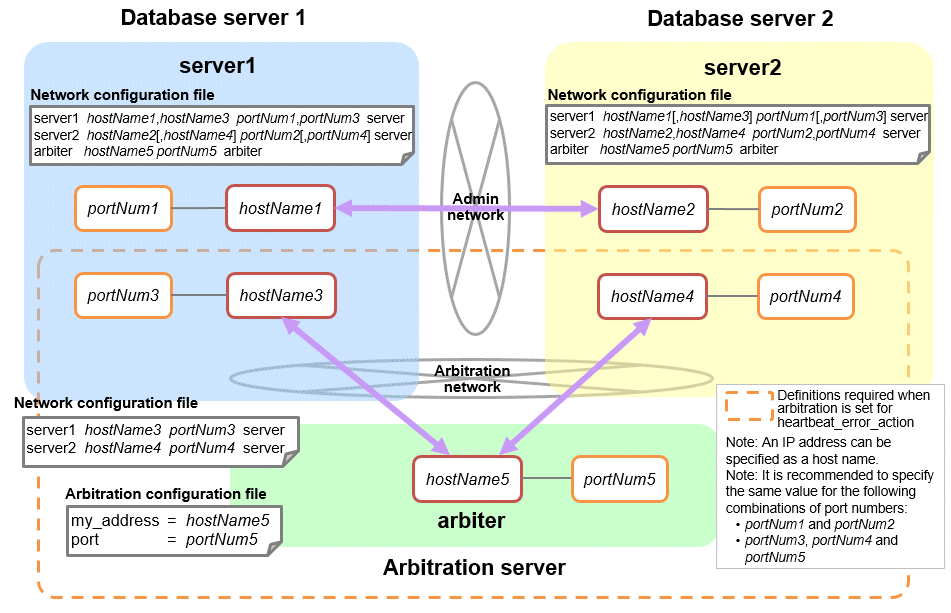

This section explains the network configuration file (network.conf) to be defined individually for the database servers and the arbitration server. Define the same content on the primary server and standby server.
For database multiplexing mode, define the network configuration for the following in network.conf.
Integration between Mirroring Controller processes
Integration between a Mirroring Controller process and the Mirroring Controller arbitration process
Items to be defined in network.conf
Format:
serverIdentifier hostName[,hostName] portNum[,portNum] [serverType]Or, serverIdentifier ipAddr[,ipAddr] portNum[,portNum] [serverType]
Specify the server identifier, IP address or host name, port number, and server type, using a space as the delimiter.
The items are explained in the table below.
Content to be defined on the database servers
This section explains the network.conf content to be defined on the database servers.
The content to be defined depends on the operation settings at the time a heartbeat abnormality is detected.
Specify definitions related to the admin network and arbitration network.
Specify the IP address or host name and port number according to the server type (database server or arbitration server) as shown in the table below.
Server type | IP address or host name | Port number | ||
|---|---|---|---|---|
First | Second | First | Second | |
server | IP address or host name used as the admin network | IP address or host name used as the arbitration network *1 | Port number used as the admin network | Port number used as the arbitration network *1 |
arbiter | IP address or host name of the arbitration server Specify the same value as that specified in the my_address parameter of arbitration.conf on the arbitration server. | Not required | Port number on the arbitration server Specify the same value as that specified in the port parameter of arbitration.conf on the arbitration server. | Not required |
*1: This value can be omitted from definitions not related to the local server. If it is omitted, network.conf must be created on both the primary server and standby server.
IPv4
server1 192.0.2.100,192.0.3.100 27540,27541 serverserver2 192.0.2.110,192.0.3.110 27540,27541 serverarbiter 192.0.3.120 27541 arbiter
IPv6
server1 2001:258:8404:1217:250:56ff:fea7:559f,2001:258:8404:1217:250:56ff:fea8:559f 27540,27541 serverserver2 2001:258:8404:1217:250:56ff:fea7:55a0,2001:258:8404:1217:250:56ff:fea8:55a0 27540,27541 serverarbiter 2001:258:8404:1217:250:56ff:fea8:55a0 27541 arbiter
Specify definitions related to the admin network.
Define the same content on the primary server and standby server.
Define lines for database servers only.
Specify only one IP address or host name and port number.
IP address or host name | Port number | ||
|---|---|---|---|
First | Second | First | Second |
IP address or host name to be used as the admin network | Not required | Port number used as the admin network | Not required |
The literal space represents a space.
IPv4
server1 192.0.2.100 27540server2 192.0.2.110 27540
IPv6
server1 2001:258:8404:1217:250:56ff:fea7:559f 27540server2 2001:258:8404:1217:250:56ff:fea7:55a0 27540
Content to be defined on the arbitration server
This section explains the network.conf content to be defined on the arbitration server.
Specify definitions related to the arbitration network.
Define lines for database servers only.
For the IP address or host name, specify the same value as the second IP address or host name specified in the database server line in network.conf of the database server.
For the port number, specify the same value as the second port number specified in the database server line in network.conf of the database server.
The literal space represents a space.
IPv4
server1 192.0.3.100 27541server2 192.0.3.110 27541
IPv6
server1 2001:258:8404:1217:250:56ff:fea8:559f 27541server2 2001:258:8404:1217:250:56ff:fea8:55a0 27541
Relationship between network-related definitions
Refer to the diagram below for the relationship between the host names and IP addresses or port numbers specified in the network configuration file (network.conf) and arbitration configuration file (arbitration.conf).
